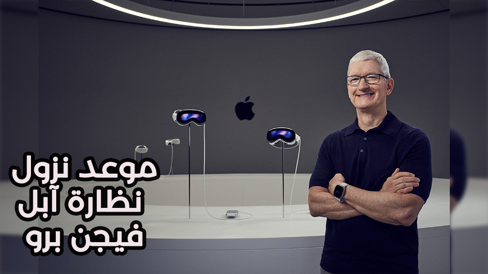
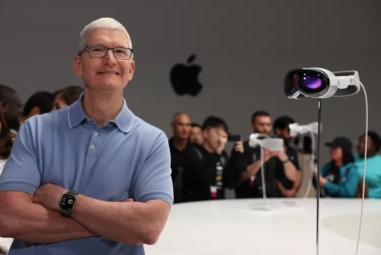

رسميًا موعد نزول نظارة آبل فيجن برو

النقاط الرئيسية:
🔴ارتفعت أسهم شركة أبل يوم الاثنين بعد إعلانها أن موعد نزول نظارة آبل فيجن برو في الولايات المتحدة في 2 فبراير
🔴سعر نظارة آبل فيجن برو سيكون 3,499 دولارًا، وستبدأ الطلبات المسبقة في 19 يناير.
🔴يمكن أن تتيح نظارة آبل فيجن برو لشركة أبل منافسة Meta Platforms Inc.’s Quest 3. التي احتلت معظم حصة سوق نظارات الواقع الافتراضي في عام 2023.
أعلنت آبل للتو عن موعد نزول نظارة آبل فيجن برو و التي ستكون متاحة للطلب في الولايات المتحدة ابتداءً من 2 فبراير. مع فتح الطلبات المسبقة في الساعة 5 صباحًا بتوقيت المحيط الهادئ في 19 يناير.
وهذا يعني أن المنتج الجديد المنتظر بشدة من الشركة في كوبرتينو على بُعد أقل من شهر من الإصدار.
في بيان صحفي على موقعها على الويب. أكدت آبل أن الجهاز سيكون متاحًا في كل من المتاجر وعبر موقعها على الإنترنت في 2 فبراير.
وفي الوقت الحالي، يقتصر ذلك على المتاجر الأمريكية والعملاء الأمريكيين عبر الإنترنت. لم يتم الإشارة إلى موعد إطلاق السماعة للمستخدمين في باقي أنحاء العالم. على الرغم من أن مارك جورمان من Bloomberg قال إنه لا يتوقع أن ننتظر طويلا حتى يحدث ذلك.
ما هو سعر نظارة آبل فيجن برو
تُعد نظارة آبل فيجن برو أول منتج رئيسي جديد من آبل من سنوات. إنها تمزج بين تقنيات الواقع المعزز والواقع الافتراضي في جهاز واحد، مما يتيح للمستخدمين مشاهدة الأفلام ولعب الألعاب وإجراء مكالمات فيديو وأكثر من ذلك. يتمتع بتقنيات عالية الجودة بشكل لا يقل عن السعر الباهظ الذي يبلغ 3499 دولارًا.
ومن جانب آخر، كشفت بيانات صحفية لشركة آبل أن نظارة آبل فيجن برو بسعر 3499 دولارًا مزودة بسعة تخزين 256 جيجابايت. وأشارت آبل إلى أن هذا هو السعر “الابتدائي”. مما يشير إلى أنه ستتوفر خيارات بسعات تخزين أكبر وأسعار أعلى في الوقت الحالي، تحتفظ آبل بهذه التفاصيل في الخفاء.
عدسات أرخص من المتوقع

لا يذكر البيان الصحفي ما إذا كان سيحتاج المستخدمون إلى زيارة متجر آبل لضبط الجهاز بشكل صحيح أو ما إذا كانت آبل ستوضح للمستخدمين كيفية استخدام الجهاز قبل أن يغادروا به. مع توفر الشراء عبر الإنترنت، قد يكون بإمكان المستخدمين تجاوز هذه العملية بالكامل أو قد توضح آبل التفاصيل قريبًا.
نظرًا لأن نظارة آبل فيجن برو ستُباع بجانب عدسات Zeiss المخصصة للنظارات الطبية، اعتبر دائمًا أن المستخدمين سيحتاجون أيضًا إلى تركيب هذه العدسات قبل الشراء. ومع ذلك، كشفت Apple عن تسعير عدسات Zeiss لأول مرة في بيانها الصحفي. ستكلف القراء غير الطبيين 99 دولارًا، في حين ستكون العدسات الطبية بسعر 149 دولارًا. يتصل كل منهما بشكل مغناطيسي بـ Vision Pro. الأسعار أقل بكثير من الـ 300-600 دولار التي توقعها جورمان قبل عدة أشهر.
وشرح البيان الصحفي ما الذي سيأتي مع السماعة من ملحقات. تتضمن ذلك حزامين (حزام نسيجي فردي وحزام دوري مزدوج)، وختم خفيف، ووسادتي ختم خفيف، وغطاء للجهاز، وقطعة قماش للتلميع، وبطارية منفصلة، وكابل USB-C، ومحول طاقة USB-C.
الآن بعد أن عرفنا موعد نزول نظارة آبل، لن ننتظر طويلا لنرى كم عدد العملاء الذين سيكونون على استعداد لقبول سعره للحصول على ما يُعتبر على نطاق واسع كـ “الشيء الكبير التالي” لشركة آبل. على الرغم من أنه لا يُتوقع أن يتم بيعه بأعداد كبيرة. إلا أن تأثيره قد يكون هائلاً، خاصة في صناعة الواقع الافتراضي الناشئة.